Liame-Conexões autênticas
-
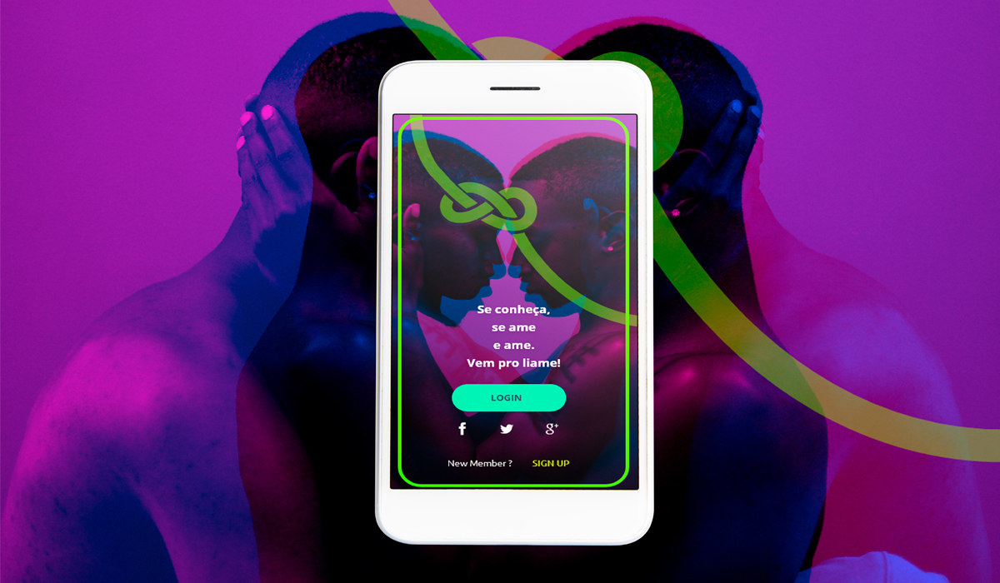
- O que é o liame?
- É um aplicativo que une as pessoas por meio do desejo de novas experiências e conexões. Sabe quando você está muito a fim de fazer algo que sua galera não curte/ ou está sem tempo (tipo pular de bungee jump, ver aquele filme ruim/bom ou ir a um show que ‘aparentemente’ só você gosta)?. Pois bem, o liame irá te ajudar a criar estes laços. Outra utilidade do liame são os 'dates comigo mesmo', que são desafios para você se conhecer melhor e turbinar sua autoestima. Que tal?
Como funciona?
-
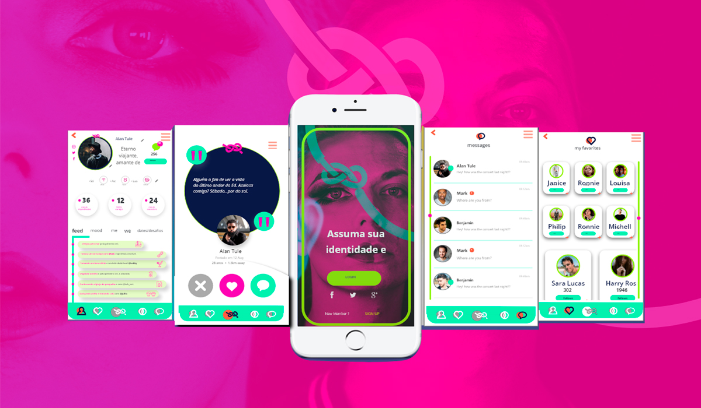
- Entendendo o esquema:(clique para ler)
- Vamos supor que você queira fazer um tour pelos bares mais legais de Belo horizonte. Daí você postaria em seu perfil: ‘Alguém a fim de fazer um tour pelos bares de bh?’ e quem tiver o mesmo interesse te daria um ‘let’s do it’, e pronto ‘You have a new kiki’. Ou seja, encontro marcado. É claro que tudo isso teria um fluxo que você verá a seguir: Login em sua conta Postagem do seu ‘a fim de…’; Verificação do perfil dos interessados... etc.
Explicação das telas
- 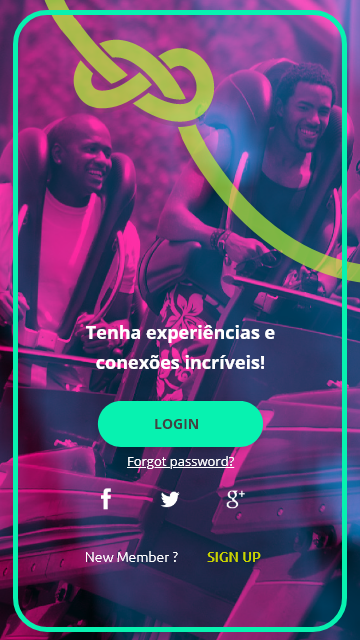
- 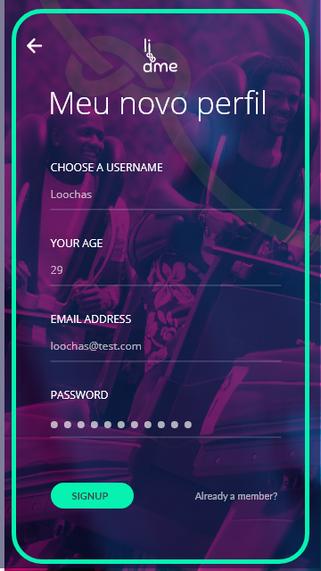
- 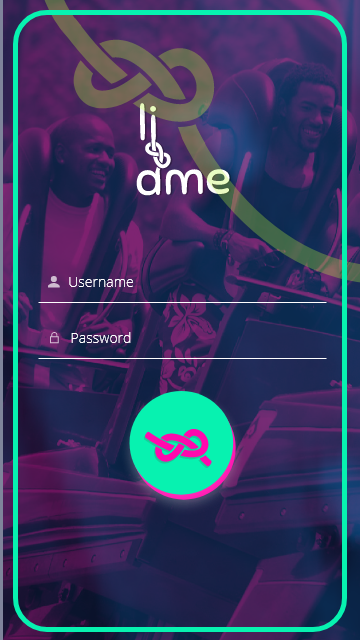
- 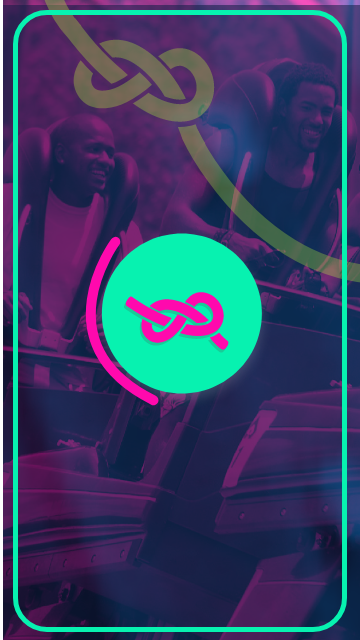
-

-

-

-

-

-

-

-

-

-

-

-

-

Primeira tela
(clique na tela e veja o seu funcionamento)
Nesta tela você irá poder fazer o login ao aplicativo. A conexão poderá ser feita pelas redes sociais:
-Facebook;
-Twitter;
-Google.
Novo Perfil
(clique na tela e veja o seu funcionamento)
Nesta tela você poderá escolher seu nickname (ainda usa isso?), entre outros dados básicos necessários para o seu login.
Tela Inicial
(clique na tela e veja o seu funcionamento)
Aqui é a sua vez de colocar o username e sua senha para acessar o liame.
Carregamento
(clique na tela e veja o seu funcionamento)
Esta será a tela para carregar seus dados e o layout do aplicativo
Alguém a fim de...
(clique na tela e veja o seu funcionamento)
Esta tela estarão disponíveis os possíveis dates/conexões. E funcionará quando deslizarmos para a esquerda ou direita ou simplismente clicando nos botões. Lembrando que o menu inferior sempre estará disponível para navegação.
You have a kiki / Você tem um encontro
(clique na tela e veja o seu funcionamento)
É nesta tela que você verá os interessados em suas novas aventuras, experiencias e conexões. E nela você ainda pode navegar pelo perfil e trocar uma ideia.
Perfil do usuário
(clique na tela e veja o seu funcionamento)
Esta é a tela do perfil dos seus crushs/colegas. Nela você pode stalkear bastante pelas redes sociais, seguir, mandar mensagem e ainda dá aquele check no mapa astral. E no feed você verá as principais atividades feitas por este usuário.
Meus favoritos
(clique na tela e veja o seu funcionamento)
Nesta tela estarão os seus favoritos, para você dar uma bisbilhotada de vez enquando.
Explorar
(clique na tela e veja o seu funcionamento)
É aqui no explorar que você poderá segmentar as experiências que você quer viver.
Pelo tipo:
-Festas;
-Negócios;
-Aprender;
-Comer;
-Saúde.
Pelo temp:
-Hoje;
-Essa semana;
-Esse mês.
Onde:
-Você colocará a localidade e o raio que você quer encontrar alguém para uma companhia.
Mensagens
(clique na tela e veja o seu funcionamento)
Por aqui você terá acesso a todas as pessoas que puxaram conversa com você ou vice versa. É sempre bom estar de olho nas notificações.
Mensagem pessoal
(clique na tela e veja o seu funcionamento)
Nesta tela é sua aba de conversa com uma única pessoa, nela você poderá:
-enviar mensagem de texto;
-enviar vídeos;
-enviar arquivos;
-enviar mensagem de voz;
-enviar memes e figurinhas;
-fazer conferências, chamadas de vídeo.
O seu fabuloso perfil - feed
(clique na tela e veja o seu funcionamento)
Nele você poderá colocar suas redes sociais, editar sua bio, ver seus seguidores, suas mensagens, fazer seu mapa astral. Além disso você verá seus charts de:
-Novas experiencias;
-Dates com você mesmo;
-Novas conexões;
-E o feed mostrará suas atividades.
Perfil / Mood
(clique na tela e veja o seu funcionamento)
No mood do seu perfil você poderá colocar sua personalidade para fora por meio de imagens, texturas, cores, memes, comidas, músicas, vídeos, selfies, ou seja tudo a mistura que compõe seu ser.
Quando clicado no botão 'ver tudo', o mood se transformará em uma galeria horizontal, tudo isso para você se expressar além do seu corpo
Perfil / We
(clique na tela e veja o seu funcionamento)
É nesta aba que você colocará os seus 'Alguém a fim de...'
Para fazer isso é só clicar no botão de adicionar e aguardar por uma companhia.
Perfil / Me
(clique na tela e veja o seu funcionamento)
Aqui trabalharemos o amor próprio, com desafios para você se conhecer antes de qualquer coisa.
Para fazer isso é só clicar no botão de gerar desafios e se divertir tentando decifrá-los.
Perfil / Dates e Desafios
(clique na tela e veja o seu funcionamento)
Aqui é sua agendinha com todos os seus compromissos e desafios marcados de forma cronológica. Ótima para quem tem a memória de peixe né?
Menu central
(clique na tela e veja o seu funcionamento)
No menu você terá as seguintes opções:
-editar seu perfil;
-convidar amigos;
-ver sua agenda;
-explorar novas experiencias;
-ver os termos de uso do app;
-e sair para a tela principal.
FAQ
- Qual é a ideia geral do aplicativo? (clique para ler)
- O aplicativo liame seria um ambiente ‘mesmo que fosse online’ onde as pessoas se sentissem à vontade nesse processo de auto aceitação e tentassem se livrar de preconceitos internalizados que constroem obstáculos neste caminho da busca pela autenticidade. E assim criar conexões mais autênticas ao que são.
- Qual seu diferencial?
- O Liame tem uma ideia de ser uma comunidade onde o orgulho reina, onde uma vez houve um grupo de ‘preteridas’ que descobriram sua beleza e poder. E que hoje se sente a vontade de dizer: "Tenho orgulho de ser quem sou". Logo todo o layout/funcionamento do app foi elaborado para trabalhar a vulnerabilidade de ser quem é. Diante disso as conexões ali feitas não teriam como princípio a escolha por 'vitrinismo', ou seja quem tem o corpo mais padronizado teria mais chances de se relacionar, seja como for.
- O projeto já está consolidado?
- O Liame está em testes de usabiliade, no atual momento estão sendo feito monitorias com todas as áreas para verificação da viabilidade de tirar isso do papel.
- Onde posso saber mais sobre o liame?
- Você pode ler o artigo que é o estudo de caso UI/UX do aplicativo, além de também poder nos adicionar nas redes sociais.
- 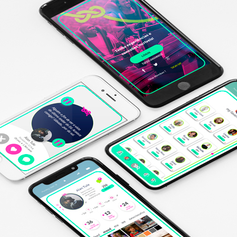
- 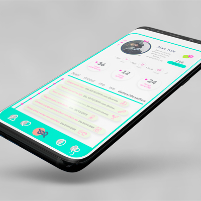
- 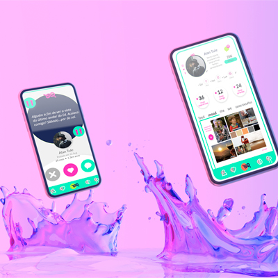
- 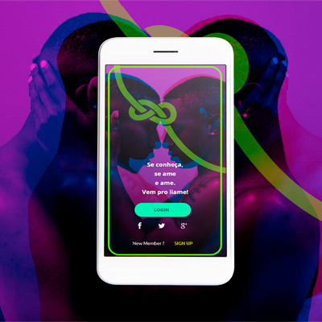
- 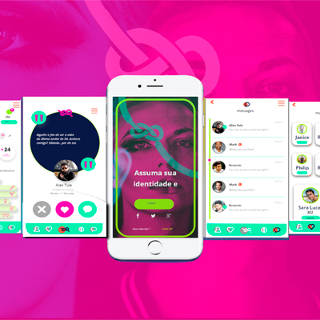
- 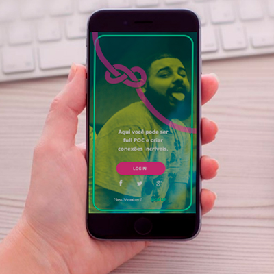
Charts
Novas experiências
1128Dates comigo mesmo
165Novas conexões
163Lugares conhecidos
187O projeto
-
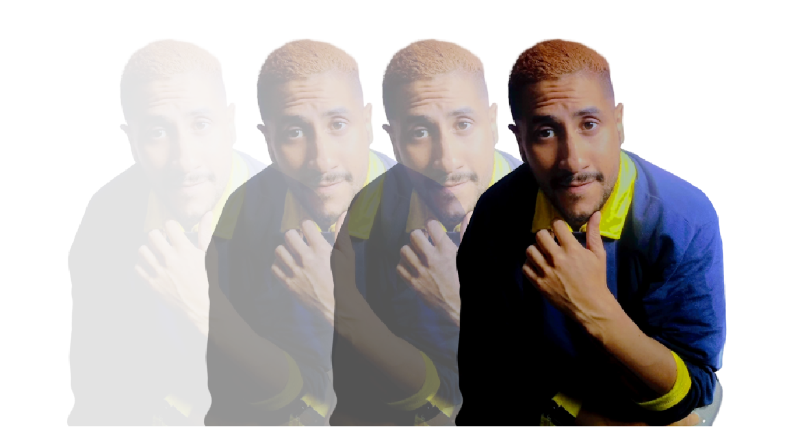
- Estudo de Caso UX/UI: liame. Uma nova experiência para conexões mais autênticas e duradouras. (clique para ler)
- É um projeto realizado pelo designer Lucas Costa. Residente de Belo horizonte e você pode saber mais sobre o projeto no seu artigo publicado no medium ou conhecendo mais do seu portifólio.
Contato

- loochasjobs@gmail.com
- +55 (31) 9999-9999
- Rua São Geraldo, nº 265
- Belo Horizonte - MG
- Doe 0 bitcoin para nos ajudar
- Seg à Sex das 8 às 18